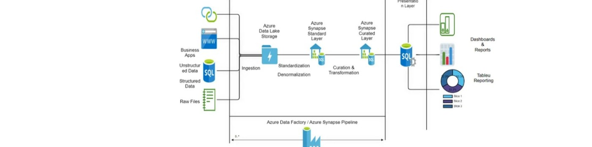
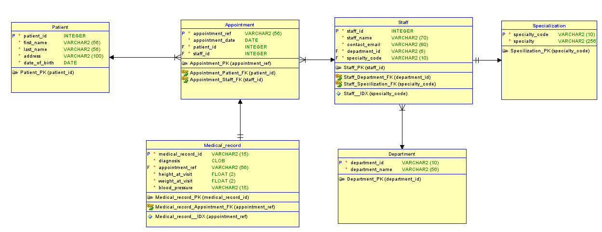
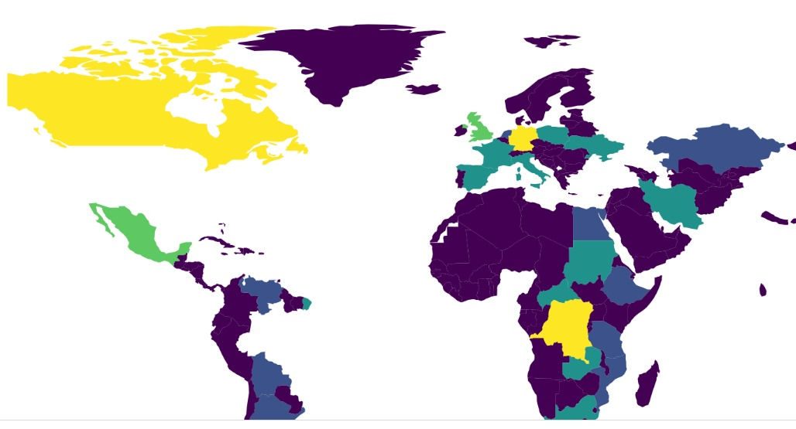
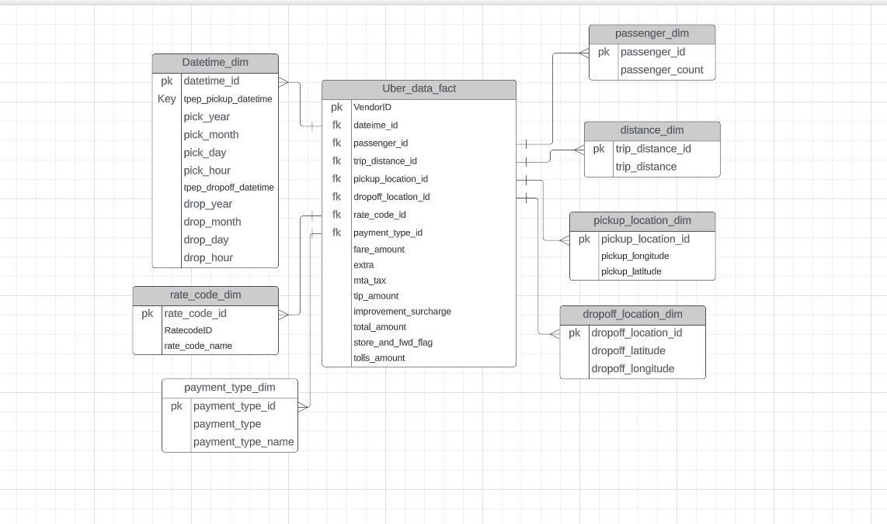
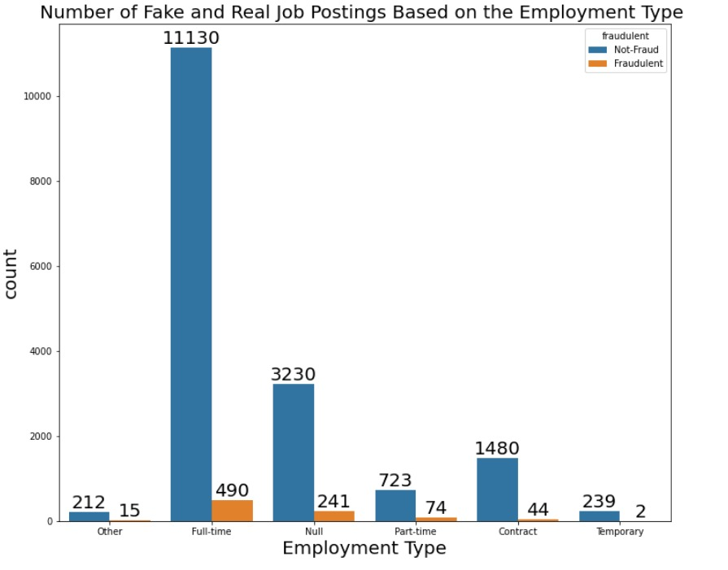

A patient information system plays a vital part in improving the patient experience, and the surgery’s workflow, and optimizing resource allocations. This project focus on creating a database system for a surgery, it explains the stages from data gathering, data modelling, normalization and security steps taken to ensure the database system is secure. Included in the project is the Entity Relation Diagram.
This analysis was done to assess the National & state-level scores from 2015 to 2023 for the Hospital Consumer Assessment of Healthcare Providers and Systems (HCAHPS) survey, a national, standardized survey of hospital patients about their experiences during a recent inpatient hospital stay.

Geospatial Analysis on Greenhouse emission and world population from the year 2000 to 2020.

The objective of this project was to design a scalable database for Uber using the star schema model to create a well structured database.

This is a She Code Africa inspred project. The job indutry today is filled with many job openings from different sectors and webistes. This project was done to analyze the industry with the most fake job postings on the internet today.
Restaurant ratings is an analysis of Mexican Restaurants based on ratings by real consumers from 2012, this analysis seeks to get insights on to customers preferences, restaurantsand & consumers demographics and top rated restaurants and why they are at the top.